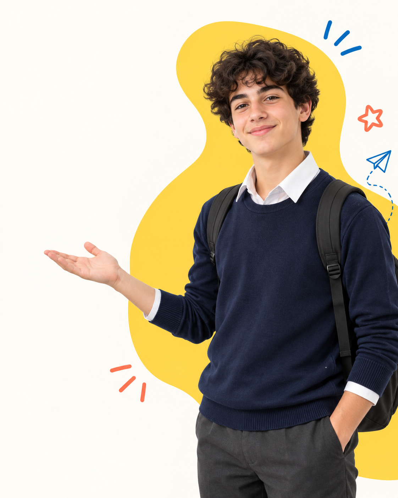
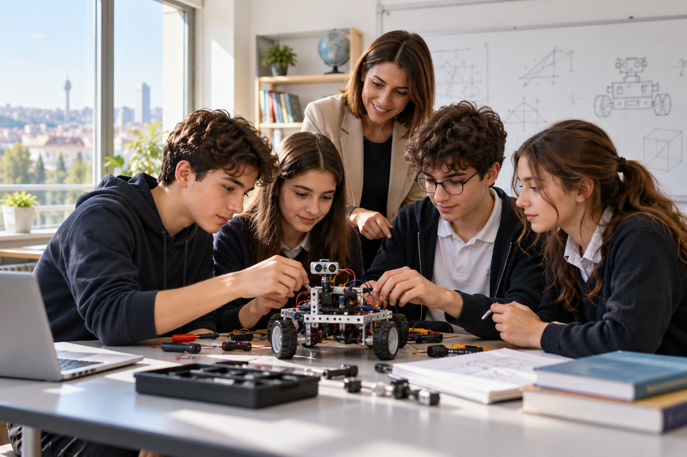

Güçlü Akademik Temel
MEB müfredatıyla uyumlu, öğrencinin kazanımlarını adım adım güçlendiren öğrenme programı.
Merak eden, sorgulayan ve üreten gençler için güçlü bir akademik temel; her öğrencinin potansiyeline göre şekillenen bir eğitim yolculuğu.

Akademik başarıyı; merak, özgüven ve kişisel gelişimle birlikte ele alıyoruz.
MEB müfredatıyla uyumlu, öğrencinin kazanımlarını adım adım güçlendiren öğrenme programı.
Öğrenme ihtiyaçlarını, hedefleri ve gelişimi düzenli takip eden bireysel rehberlik desteği.
Robotik, kodlama ve dijital üretimle teknolojiyi yalnızca kullanan değil, geliştiren gençler.
İngilizce ve Almanca programlarıyla iletişim becerilerini ve kültürel farkındalığı geliştirme.
Müzik, görsel sanatlar ve beden eğitimiyle öğrencilerin ilgi alanlarını keşfetme fırsatı.
Sorumluluk, saygı, empati ve iş birliğini okul yaşamının doğal parçası hâline getirme.
Öğrencilerimizin düşünme, sorgulama ve üretme becerilerini geliştiren güvenli bir okul iklimi.
LGS ve YKS hazırlığını düzenli takip, kişisel çalışma planları ve rehberlik desteğiyle sürdürüyoruz.
Ortaokuldan Anadolu lisesine uzanan eğitim yolculuğunda her öğrencinin yanında.

5–8. SINIFTemel akademik beceriler, sosyal-duygusal gelişim ve 5. sınıftan itibaren planlı LGS hazırlığı.
Ortaokulu keşfet →Analitik düşünme, araştırma ve 9. sınıftan itibaren bütüncül YKS hazırlığı.
Liseyi keşfet →Robotik kodlama, sanat, müzik, yabancı dil, spor ve kişiye özel rehberlik.
Eğitimleri keşfet →Öğrencilerimizin kendilerini keşfedip geleceğe güvenle hazırlanacağı bir okul iklimi kuruyoruz.
Öğrencilerimizin potansiyellerini keşfedecekleri; düşünme, sorgulama ve üretme becerilerini geliştirecekleri bir okul iklimi oluştururuz.
Etkinlikler, duyurular ve okul yaşamından güncel haberler.
Etkinlikleri ve güncel duyuruları Arya Koleji’nin haberler sayfasından takip edin.
Haberleri incele →